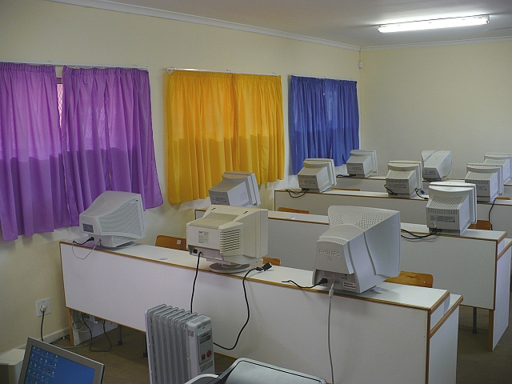
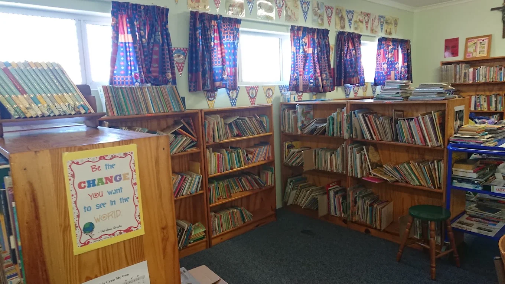
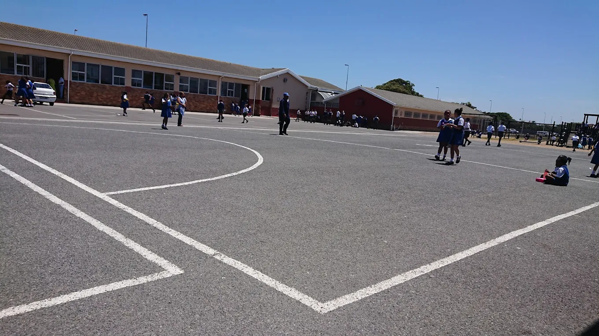
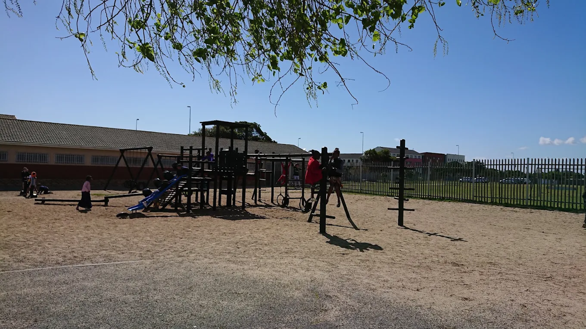

School Curriculum & Extra-Murals
Holy Cross Convent Primary School runs a co-educational structure for boys and girls from Pre-Grade R up to Grade 7. Our learning syllabus follows the official Western Cape Education Department (WCED) specifications, prioritizing core English instructional pathways and custom IsiXhosa language classes.
Our Campus & Academic Facilities
We take great pride in providing a well-rounded learning environment with modern physical infrastructure:




Our Academic Phases & Learning Subjects
We break our school curriculum into three primary phases to give children the best focus as they grow up:
In these early years, we focus on building a happy and comfortable space where children learn to love school. The subjects are simple but important:
- Home Language (English reading, writing, and speaking)
- First Additional Language (Interactive conversational IsiXhosa)
- Mathematics (Counting, basic shapes, plus and minus numbers)
- Life Skills (Art, physical education, health, and swimming)
As children move into higher grades, we help them study more independently. They learn to think critically and solve more complex problems with these subjects:
- English Home Language & Literature
- IsiXhosa Additional Language grammar
- Mathematics (Fractions, long division, and word problems)
- Natural Sciences & Technology (Plants, animals, and simple structures)
- Social Sciences (History geography and South African heritages)
- Life Skills (Personal well-being and visual arts)
Grade 7 is our final year, and we focus heavily on preparing learners for high school expectations. The workload expands to separate specialized subjects:
- English Language and Public Speaking
- IsiXhosa Communication Skills
- Mathematics (Algebra, equations, and graphs)
- Natural Sciences (Physics, chemistry, and biology basics)
- Technology (Technical drawing and design challenges)
- Economic and Management Sciences (Basic accounting and business)
- Creative Arts (Drama and design portfolios)
- Life Orientation (Career choices and fitness)
Official School Downloads & Forms
Click a link below to view or download our official school documents: